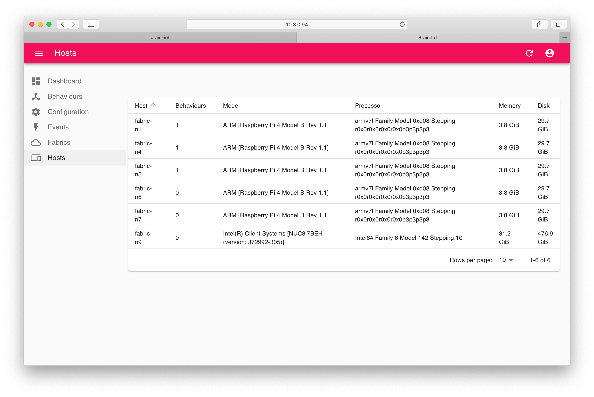

Distributed Deployment
Summary
In this tutorial we’ll deploy the BRAIN-IoT core services in multiple containers using the Paremus Service Fabric.
The Fabric manages multiple remote containers and can deploy OSGi artifacts to them.
This tutorial assumes a Fabric is already running and we know its admin URL. The Create Fabric in Cloud and Create Fabric on-premise tutorials cover creating and starting a Fabric.
Setup
An HTTP server is required to serve the BRAIN-IoT artefacts to be deployed to the Fabric.
brain-iot-repos
We first need to copy the BRAIN-IoT core repositories to the HTTP server. These contain the Event Bus, Behaviour Management Service, BRAIN-IoT User Interface and their dependencies.
You can either clone and build the fabric-deployment project from GitLab or download the latest brain-iot-repos.zip from Nexus:
$ curl -u someuser -O https://nexus.repository-pert.ismb.it/repository/maven-snapshots/com/paremus/brain/iot/brain-iot-repos/0.0.1-SNAPSHOT/brain-iot-repos-0.0.1-20200720.125205-11.zip
Enter host password for user 'someuser':
If you choose to build the fabric-deployment project:
$ git clone git@git.repository-pert.ismb.it:BRAIN-IoT/fabric-deployment.git
$ cd fabric-deployment/fabric-deploy-repos
$ mvn package
Created zip is brain-iot-repos/target/brain-iot-repos-0.0.1-SNAPSHOT.zip
Unzip brain-iot-repos.zip in the root of the HTTP server (it unpacks into directory brain-iot-repos), for example:
webserver $ sudo unzip -d /usr/share/nginx/html /tmp/brain-iot-repos-0.0.1-SNAPSHOT.zip
System Document
The Fabric uses a system document to control deployment. Its purpose is similar to the app.bndrun from the quickstart tutorial.
A system document defines multiple system.part, each of which is deployed to an isolated OSGi framework in a remote OSGi container (or “fibre”).
The key parts of a system document are:
repopath
repopath: is a list of relative or absolute URLs to repository indexes.
It is similar to the -standalone: target/index.xml directive in bndrun.
<system xmlns="http://schema.paremus.com/sf/1.2"
name="Brain-IoT-Smart-Security-Light-Fabric"
version="1.0.0"
repopath="brain-iot-repos/core/index.xml,brain-iot-repos/ui/index.xml"
boundary="fabric">
system.part
system.part contains all other elements:
<system.part name="Core">
...
</system.part>
<system.part name="UI">
...
</system.part>
config
config is used to configure system.part using ConfigAdmin.
Here is the config for the UI, note the setting of port=8888:
<config pid="org.apache.felix.http" factory="true">
<property name="org.osgi.service.http.port" value="8888" />
<property name="org.eclipse.jetty.servlet.SessionCookie"
value="Paremus-SessionId" />
</config>
and here is the config to set the security light marketplace indexes on the Behaviour Management Service:
<config pid="eu.brain.iot.BehaviourManagementService">
<!-- brain-iot marketplace indexes (comma separated) -->
<property name="indexes"
value="https://nexus.repository-pert.ismb.it/repository/marketplaces/com.paremus.brain.iot.marketplace/security-light-marketplace/0.0.1-SNAPSHOT/index.xml" />
</config>
Note this is the only part of the system document that is specific to the security light. If we omit this setting, the system document would be generic and we could configure the marketplace indexes for the Behaviour Management Service (BMS) in the BRAIN-IoT UI as shown in The Quick Start tutorial.
system.part.element
system.part.element is similar to -runrequires in bndrun:
<!-- The core BRAIN-IoT fabric requirements -->
<system.part.element name="com.paremus.brain.iot.eventing.impl"
category="osgi.bundle" />
replication.handler
A replication handler has no equivalent in bndrun. It is used to replicate a system.part across multiple remote containers/nodes.
If not specified, for example in the UI, then the system.part is only deployed to a single node.
The BRAIN-IoT Core (EventBus etc) needs to be deployed to all nodes in the fabric, so it specifies this replication.handler :
<!-- replicate Core system.part to all nodes -->
<replication.handler name="scale" type="scalable">
<property name="scaleFactor" value="1.0" type="float" />
<property name="minimum" value="1" type="integer" />
</replication.handler>
contract
contract is used to target deployment. Here the UI system.part will only be deployed to a node containing the UI feature:
<!-- deploy to node with label UI -->
<contract features="(UI=*)" cancelationCost="-1"/>
brain-iot-system.xml
Here’s the full system document brain-iot-system.xml for the Security Light system. It needs to be installed at the root of the HTTP server (so that the repopath resolves to the brain-iot-repos folder we’ve just unpacked).
<?xml version="1.0" encoding="utf-8"?>
<system xmlns="http://schema.paremus.com/sf/1.2"
name="Brain-IoT-Smart-Security-Light-Fabric"
version="1.0.0"
repopath="brain-iot-repos/core/index.xml,brain-iot-repos/ui/index.xml"
boundary="fabric">
<system.part name="Core">
<config pid="eu.brain.iot.BehaviourManagementService">
<!-- brain-iot marketplace indexes (comma separated) -->
<property name="indexes"
value="https://nexus.repository-pert.ismb.it/repository/marketplaces/com.paremus.brain.iot.marketplace/security-light-marketplace/0.0.1-SNAPSHOT/index.xml" />
<!-- BND connection settings, used if the marketplace requires authentication and required on all nodes running as fibres-->
<!--
This version uses environment variables which must be set
when launching the Paremus Service Fabric fibres
MARKET_PLACE_USER - the user name
MARKET_PLACE_PASSWORD - the password
-->
<!-- <property name="connection.settings"
value="server;id=https://nexus.repository-pert.ismb.it;username=${envcfg#MARKET_PLACE_USER};password=${envcfg#MARKET_PLACE_PASSWORD}"/> -->
<!-- This version defaults to $HOME/.m2/settings.xml -->
<property name="connection.settings"
value=""/>
<!-- This version sets a different file location -->
<!-- <property name="connection.settings"
value="/opt/fabric/brain-iot/settings.xml"/> -->
</config>
<!-- replicate Core system.part to all nodes -->
<replication.handler name="scale" type="scalable">
<property name="scaleFactor" value="1.0" type="float" />
<property name="minimum" value="1" type="integer" />
</replication.handler>
<!-- The core BRAIN-IoT fabric requirements -->
<system.part.element name="com.paremus.brain.iot.eventing.impl"
category="osgi.bundle" />
<system.part.element name="com.paremus.brain.iot.management.impl"
category="osgi.bundle" />
<system.part.element name="com.paremus.brain.iot.installer.impl"
category="osgi.bundle" />
<system.part.element name="com.paremus.brain.iot.resolver.impl"
category="osgi.bundle" />
<system.part.element name="com.paremus.brain.iot.message.integrity.insecure.impl"
category="osgi.bundle"/>
<system.part.element name="com.paremus.ui.metaconfig"
category="osgi.bundle" />
</system.part>
<system.part name="UI">
<launch.properties>
<!-- prevent Jetty from starting until its config is loaded -->
<property name="org.osgi.service.http.port" value="-1" />
</launch.properties>
<!-- configure jetty for UI -->
<config pid="org.apache.felix.http" factory="true">
<property name="org.osgi.service.http.port" value="8888" />
<property name="org.eclipse.jetty.servlet.SessionCookie"
value="Paremus-SessionId" />
</config>
<!-- deploy to node with label UI -->
<contract features="(UI=*)" cancelationCost="-1"/>
<system.part.element name="com.paremus.brain.iot.ui.rest.app"
category="osgi.bundle" />
<system.part.element name="com.paremus.ui.rest.config"
category="osgi.bundle" />
<system.part.element name="com.paremus.ui.client"
category="osgi.bundle" />
<system.part.element name="org.apache.aries.jax.rs.shiro.authz"
category="osgi.bundle" />
<system.part.element name="org.apache.aries.jax.rs.jackson"
category="osgi.bundle" />
<system.part.element name="com.fasterxml.jackson.jaxrs.jackson-jaxrs-json-provider"
category="osgi.bundle" />
</system.part>
</system>You can either copy/paste it from here or clone the fabric-systems project from GitLab (its path is security-light-fabric/src/main/resources/brain-iot-system.xml).
To confirm that setup is correct, browse to http://10.8.0.98/brain-iot-system.xml, replacing 10.8.0.98 with the ip-address of your HTTP server.
Deploy on Fabric
Now we’ve completed the setup we can deploy the Security Light Example to the Fabric.
Fabric UI
Browse to the Admin URL for your Fabric, for example: https://10.8.0.94:9106/
Note: the Fabric doesn’t have a security certificate, so you’ll need to dismiss browser warnings about it being an unsecure site.

Login with username AdminUser and password AdminUser, and then click the checkbox to show Fibre Names:
You should see one fibre icon for each node in your Fabric. In this case the node fabric-n9 is the infrastructure node (indicated by the cross in its icon). The infrastructure node is responsible for downloading artifacts and deploying them to other nodes.
Set Labels
Labels are used to control deployment. You may remember that the UI system.part was configured with a contract so it would only be deployed to a fibre with the UI feature.
Click on the Labels tab so see whether the UI label is already set.
Then click back to the Fabric tab, and click the node where you want the UI to be deployed. For example, the infrastructure node fabric-n9.
Then enter “UI” for the name and “true” for the value, and click the + symbol:

Now return to the main view by clicking the fabric name in the bread crumbs at the top left (its :: brain-iot :: in this example).
Deploy System
Click the Systems tab, and then paste the URL of the Security Light system document we prepared earlier:
Then click the Import button, after a few seconds the system name should appear:

Now click the system name and you’ll see the deployment page:

If the state is not valid/managed it means there was a problem resolving the bundles. See the trouble shooting page for how to diagnose this issue.
Click the deploy control (it looks like a play button). After a minute (or two) you should see the resolution of the deployment, showing the UI has been deployed to fabric-n9 and the BRAIN-IoT Core has been deployed to all other nodes:
BRAIN-IoT UI
Now that the system has been deployed, we should be able to access the BRAIN-IoT UI on port 8888 of fabric-n9 http://10.8.0.94:8888
Login with username admin and password admin as in the quickstart tutorial.
Now click on the Hosts tab, you should see all the nodes in the BRAIN-IoT Fabric:

We didn’t visit this page in the quickstart tutorial because there was only a single host.
Now click the Behaviours tab and you’ll see the Security Light Behaviours are already there. This is because the system document configured the BMS with the Security Light Example index.
We will now install the Security Light Behaviours, each on a different node.
Click on Example Smart Security Sensor and then click in the Install host field (as we did in the quickstart tutorial), but now you can choose to install the behaviour on any host:
Choose any host and click Install, then repeat for the Example Smart Light Bulb and Example Smart Security Light Behaviour choosing a different host each time.
You may need to refresh the page or switch tabs to see the Installed icon change.
If you now click on the Hosts tab, you should see that 3 hosts have 1 behaviour installed:

Security Light Example
You can now run throught the Security Light Example (as we did in the quickstart tutorial), except now the sensor and light are on different hosts.
The sensor was installed to fabric-n1 and the light to fabric-n4.
So the URL for the sensor is http://10.8.0.22:9100/sensor-ui/index.html, and the URL for the light is http://10.8.0.66:9100/light-ui/index.html
Note that these URLs are not prefixed by /example as they were in the quickstart tutorial and they use port 9100.
The example should work just as it did in the quickstart tutorial, except now the events are being delivered to remote nodes!
Discover HTTP port
To see which port is used by the HTTP service for the example UIs, you need to look in Fabric Admin. Click the icon for the node, in this case fabric-n1 and then click the HTTP Runtime tab. Click the Framework dropdown and select the Core framework.
The IP address and port are listed under Serving Endpoint:

Undeploy
To remove the system from the Fabric, click on the Systems tab in Fabric Admin and then click the Security Light system.
Click the remove control (looks like an eject button) and the system will be removed.
End
That completes this tutorial.
Prev Next